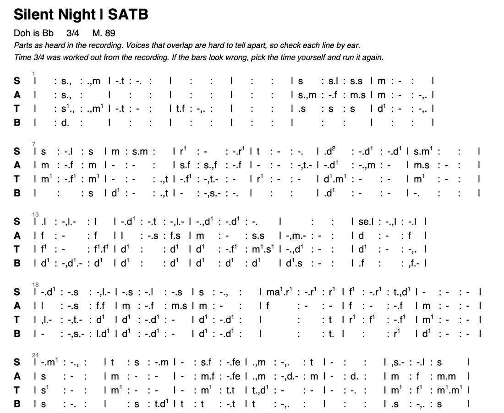

Turn any song into solfa for your choir
Paste a link or drop in a recording. Choir Solfa writes out soprano, alto, tenor and bass in tonic solfa, ready to print, with practice audio for each part.
For Mac and Windows. It runs on your own computer, so your music stays with you.

How it works
No music reading software and no account. Just the song.
-
Give it the song
Paste a YouTube or Spotify link, or drop in an MP3, WAV, M4A or video file from your phone or computer.
-
It listens to each voice
It separates the singing from the instruments, hears the notes, finds the key, time and beat, and sorts the notes into four parts. A lead singer gets a hymn-style harmony written under the tune.
-
Print and practise
Get a PDF in standard tonic solfa, a text copy, and a MIDI file with each part on its own track, so singers can hear just their line.
Install Choir Solfa
Download the installer, open it, and wait about five minutes. After that, you open Choir Solfa like any other app.
- Open the download. You'll see Install Choir Solfa. Double-click it.
- Your Mac says it can't check the app, because it isn't from the App Store. That's expected. Click Done, then:
- Open System Settings (in the Apple menu) and go to Privacy & Security.
- Scroll down to the message about Install Choir Solfa and click Open Anyway. Enter your Mac password if it asks.
- A window opens and shows the install as it goes (about 1 GB the first time). Choir Solfa opens in your browser when it's ready.
Prefer to type? Use Terminal instead
This does the same thing, with no security warning. Open Terminal (press ⌘ Space and type Terminal), paste this line and press Return:
curl -LsSf https://raw.githubusercontent.com/d-beloved/choir-solfa/main/install.sh | sh
- Open the download (install-choir-solfa). If your browser asks whether to keep it, choose Keep.
- If Windows says it protected your PC, that's expected for new apps. Click More info, then Run anyway.
- A window opens and shows the install as it goes (about 1.5 GB the first time). Choir Solfa opens in your browser when it's ready.
Prefer to type? Use PowerShell instead
This does the same thing. Open PowerShell (click Start and type PowerShell), paste this line (right-click pastes) and press Enter:
powershell -ExecutionPolicy ByPass -c "irm https://raw.githubusercontent.com/d-beloved/choir-solfa/main/install.ps1 | iex"
Good to know
Short answers to what choir leaders usually ask first.
Is it free?
Yes. It's open source under the MIT license, and there are no accounts or subscriptions.
Is my music uploaded anywhere?
No. Everything happens on your computer. The only download is the song from the link you give it.
How accurate is it?
It's automatic transcription, so treat each score as a first draft. Check every part by ear before teaching it. Clear recordings with few instruments work best.
What about Spotify links?
Spotify's audio is protected, so it finds the same recording on YouTube and tells you which video it used, so you can check it.
Can I read solfa?
You don't need to already. The app has a short guide, and every PDF ends with a one-page key for singers.
How do I remove it?
In Terminal or PowerShell, run choir-solfa shortcut --remove, then uv tool uninstall choir-solfa.